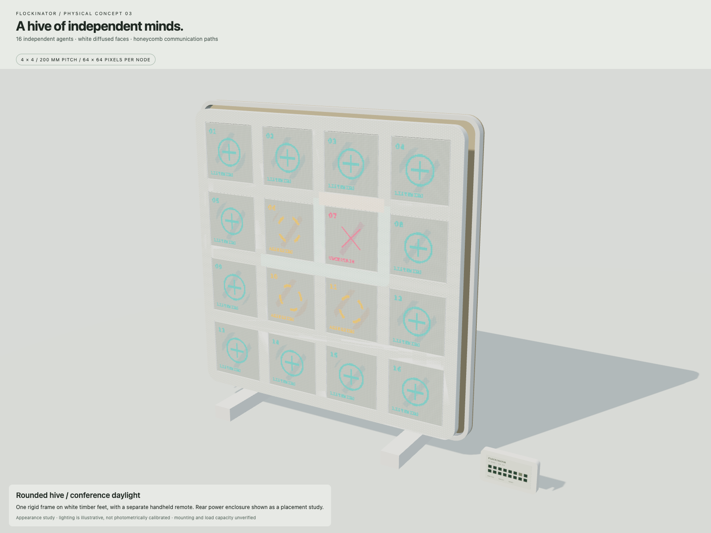
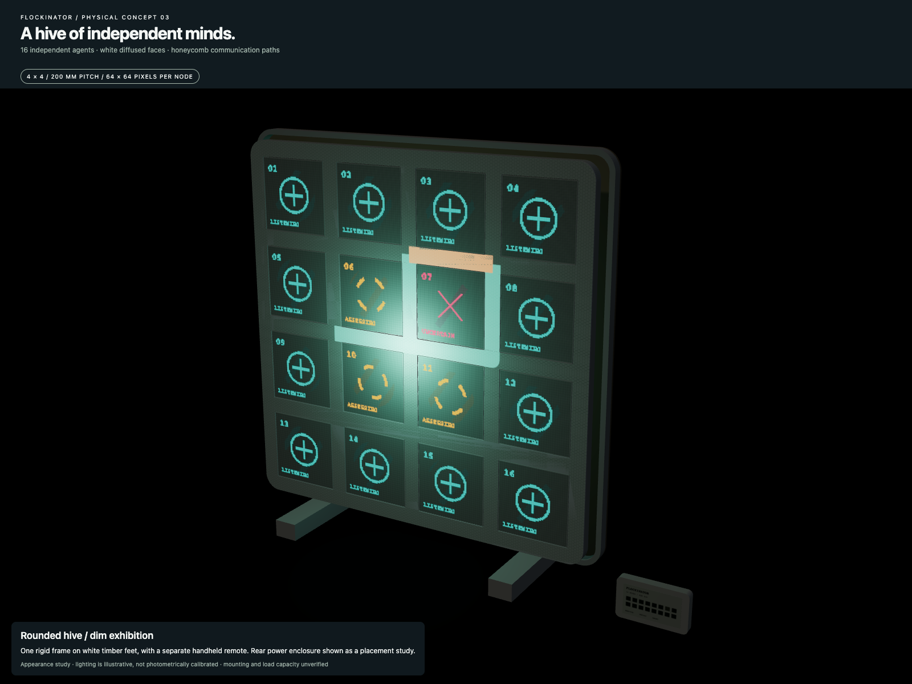
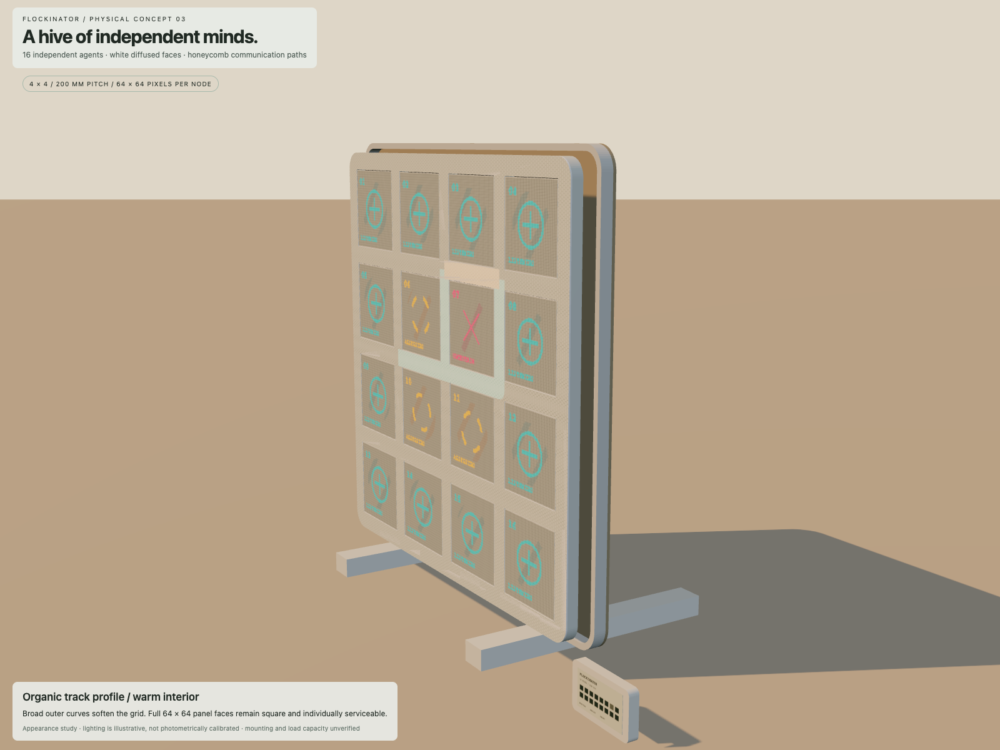
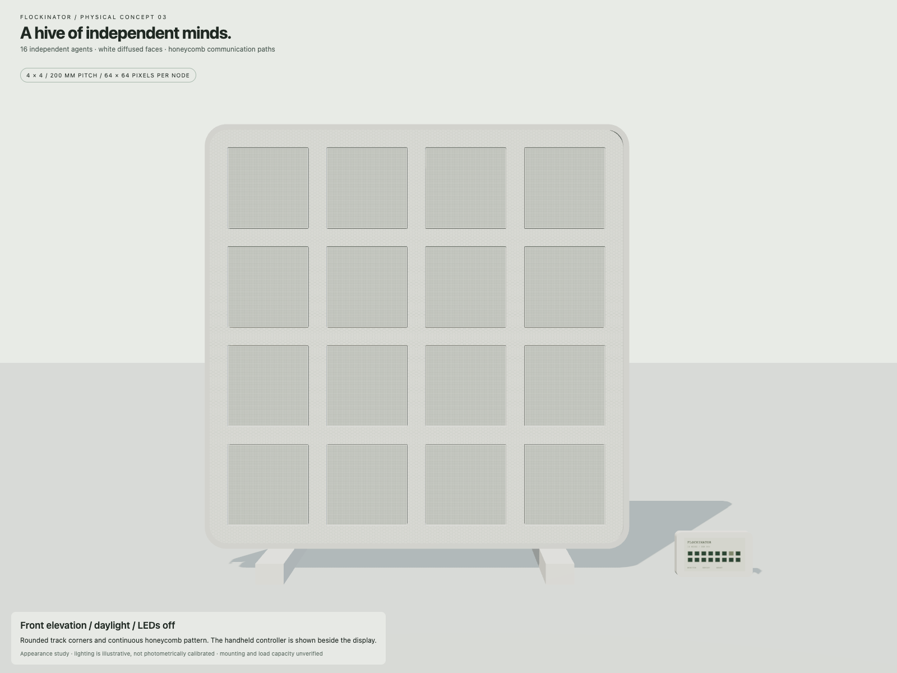
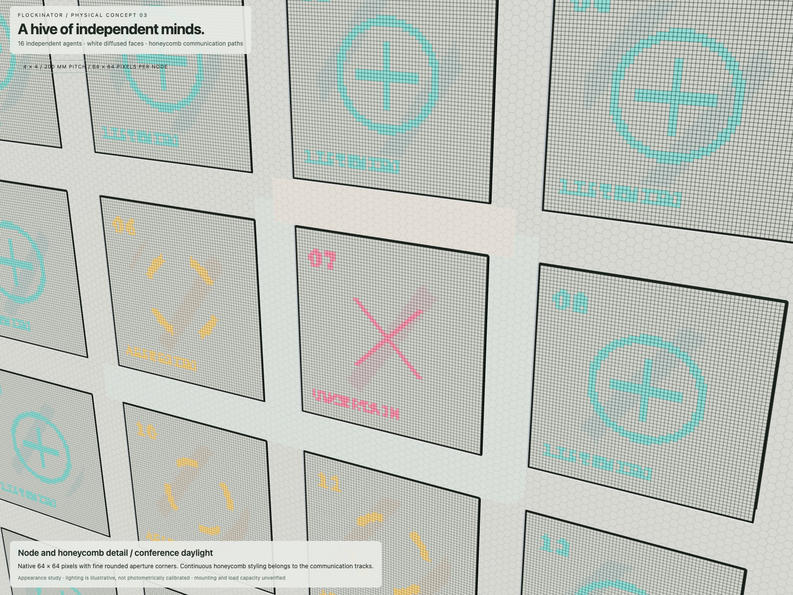
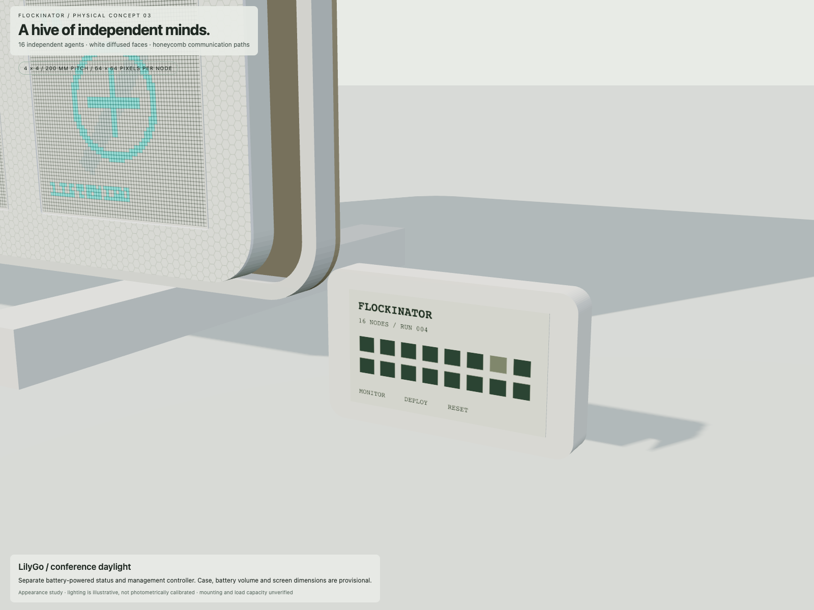
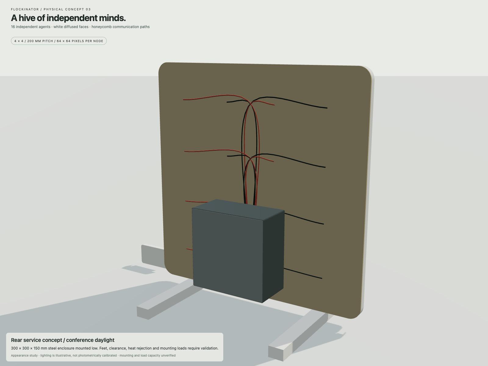
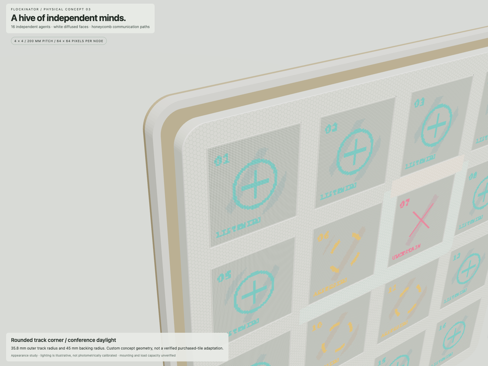

Sixteen distinct nodes. White diffused faces. A shared honeycomb communication grid.
875.8 mm square body · one rigid backing · separate battery-powered remote · provisional geometry
Open interactive 3D viewer · GLB model · FreeCAD model · Dimensions and assumptions








Appearance renders, not calibrated optical simulation. Hardware envelopes, structural mounting and mounting capacity require verification.